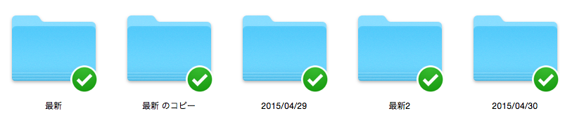
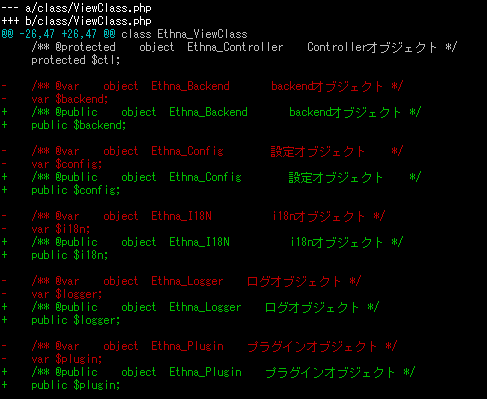
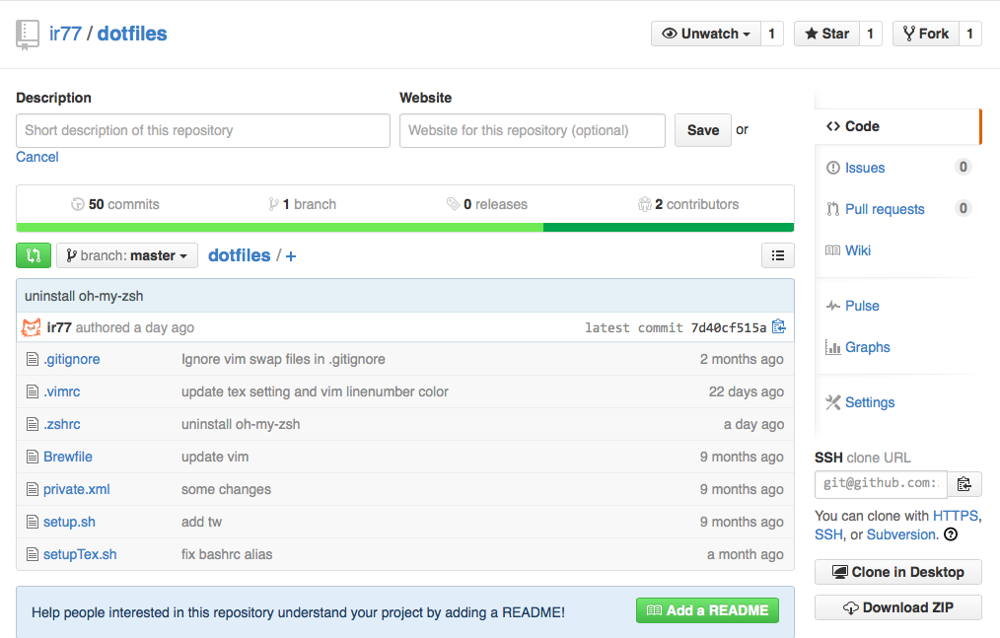
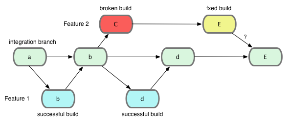

Git& Github 入門 ---- ×どうやって使うか ◯なぜ使うか ---- <font color="red">Git</font>って 聞いたこと ある？ ---- <img src="gitlogo.png" width="75%" alt=""> ---- <font color="red">Git</font>は バージョン 管理ツール ---- バージョン 管理？ ---- iOS 7.0→7.1→7.2 →8.0→8.1 ---- なぜ するの？ ---- バージョン管理を しなかった場合 ---- 新機能開発！ ---- 新機能開発！ 新機能開発！ ---- 新機能開発！ 新機能開発！ 新機能開発！ ---- あれ… 急に動かなくなった… ---- 原因が分からない… 最初からやり直し… ---- ʅ (◞‸◟；) ʃ ---- いやいや… 俺は大丈夫 って人いる？ ----  ---- こんな ダサい管理 はやめよう！ ---- <font color="red">Git</font>を 使った場合 ---- 新機能開発！ ---- バージョン を保存！ ---- 新機能開発！ ---- バージョン を保存！ ---- あれ… 急に動かなくなった… ---- でも <font color="red">Git</font> なら？ ---- 前のバージョン に戻せる！ ---- 前のバージョン との差分が 見れる！ ----  ---- ちなみに 使えるのは プログラム だけじゃない ---- Texにも 使える！ ---- 便利 ٩( 'ω' )و ---- どうやって するの？ ---- 作業中の ディレクトリで 最初に 「git init」 ---- ファイルを変更したら 変更ファイルを 「git add」 で選択 ---- ファイルを選択したら 「git commit」 でセーブ！！ ---- 分かった？ ---- 分からんよね ---- 「彼女」に 例えよう！ ---- ストーリー 「彼女を良い 感じにする」 ---- 彼女ができた ↓ 「フォルダ作成」 ---- フォルダの中身 ・黒髪 ・ロング ・二重 ・etc... ---- git init ↓ お前を監視する ---- 彼女がピアス をつけた ---- git add ピアス git commit 「君のピアスかわいいね ほぞーん！パシャッ」 ---- 彼女がマニキュア をした ---- この場合は？ ---- git add マニキュア git commit 「君の爪かわいいね！ パシャッ！」 ---- 黒髪→金髪 ---- 可愛くないなら 元に戻せる！ ---- 詳しくは サルでもわかるGit入門 <font color="blue">http://www.backlog.jp/git-guide/</font> Gitチュートリアル | アトラシアン <font color="blue">https://www.atlassian.com/ja/git/</font> ---- ---- <font color="red">Github</font>って 聞いたこと ある？ ---- GitHubはソフトウェア開発 プロジェクトのための 共有ウェブサービスであり Gitバージョン管理システム を使用する（Wikipedia） ---- GitHubはソフトウェア開発 <font color="red">プロジェクトのため</font>の 共有ウェブサービスであり Gitバージョン管理システム を使用する（Wikipedia） ---- プロジェクト管理 ができる！ ---- ・issue管理機能 ・コードレビュー ・Wiki ---- 複数人での 作業が 容易 ---- 便利 ٩( 'ω' )و ---- GitHubはソフトウェア開発 プロジェクトのための <font color="red">共有ウェブサービス</font>であり Gitバージョン管理システム を使用する（Wikipedia） ---- 共有？ ---- コードの共有 →人に見せる →人のを見る →共同作業 ---- コードの共有 →<font color="red">人に見せる</font> →人のを見る →共同作業 ---- 他の人に見せれる →企業の人が見る →就活で使える →インターン受かる ---- 便利 ٩( 'ω' )و ---- コードの共有 →人に見せる →<font color="red">人のを見る</font> →共同作業 ---- 他の人の プログラムを →見れる →使える ----  ---- コードの共有 →人に見せる →人のを見る →<font color="red">共同作業</font> ---- 共同作業 →分担作業 ---- どうやって 分担作業を するのか ---- Gitの 「branch機能」 ---- branch とは？ ---- ----  ---- branchを切って commit！ ---- commit！ commit！ ---- pull-request！ ---- merge！ ---- ---- 便利 ٩( 'ω' )و ---- Githubで プログラムを 安全に！ 楽しく！ 書こう！ ---- お わ り